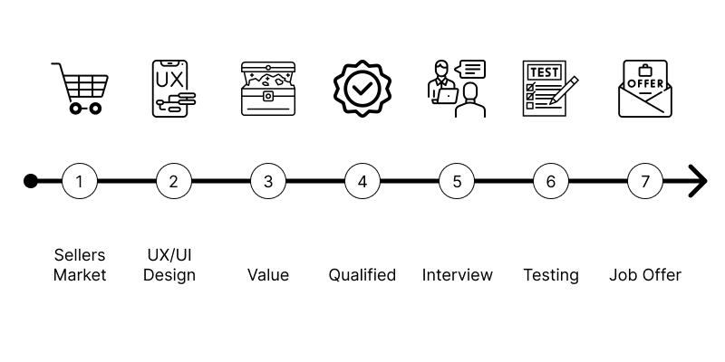
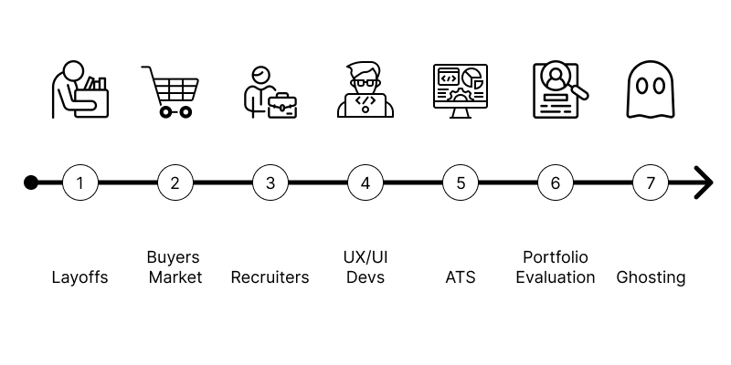
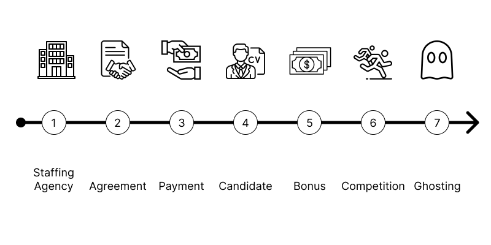

Job Hunt 2024
2024-03-25
To understand my situation you'll need to understand the insanity of the corporate application process and how it has changed over the last few years.
2021 Corporate Application Process

- It was a seller's market. Companies were backlogged with work and needed to hire people fast.
- UX/UI Designers were in high demand.
- Companies valued people with design skills.
- Designers with Adobe XD or Figma skills were qualified.
- Interviews were given out like candy.
- Hiring managers would review resumes and portfolios during interviews. Designers would be asked to complete a small design challenge to test their skills.
- Written job offers were sent within 2 to 3 business days at or above market rates.
2024 Corporate Application Process

- Due to mass layoffs over the last two years there are fewer design jobs and more competition.
- It is a buyer's market. Companies are slower and more selective while hiring.
- Recruiters have shifted their focus to finding candidates for software development roles.
- Companies see UX/UI Design as something Developers can do while coding software.
- Resumes are filtered through an Application Tracking System (ATS) for keywords.
- Those who pass the ATS get their resume and portfolio sent to a hiring manager for evaluation. To land an interview you'll need a prestigious resume, an award-winning portfolio, and someone already working for the company who can vouch for you.
- Those that don't pass the ATS get filtered out and ghosted.
How Recruiters Work

- Recruiters are employees of a staffing agency. They do not work for job seekers.
- The agency signs agreements with different companies to find them candidates.
- The agency doesn't get paid until the company hires a candidate.
- If the recruiter's candidate gets picked, they get a bonus.
- This incentivizes recruiters to send as many candidates to the same job opening as possible.
- Creating more competition for a job opening, while increasing their chances of getting a bonus.
- Recruiters have a daily quota of emails and phone calls they have to make. To save time, recruiters ghost candidates who don't get picked.
My Situation
Over the past 10 months, I've applied for over 400+ UX/UI Design roles. I've had to deal with rude gatekeeping recruiters while going through the insane application process described above.
A handful of recruiters scheduled phone calls to gather my information and tell me about a role.
They told me they would send my information to the hiring manager for the role and let me know if they heard anything back. 99% of them ghosted me.
Only two agencies sent me rejection emails letting me know the company decided to go with another candidate.
I've followed all the standard advice you see promoted on LinkedIn and YouTube by job-hunting experts. I have reached out to people in my network asking them to keep me in mind if I can help with any UX/UI Design projects or if they see any job openings.
I've rewritten my resume 20 times. In the past recruiters have indirectly encouraged me to lie on my resume. They do not understand that no one can bullshit their way into a corporate job. Because hiring managers will review your resume and test you to make sure you can do the work. If you don't know the answers or cannot run the software you'll fail and they'll end the interview.
I redesigned my website 5 times and then decided to create a completely separate UI Design Portfolio website. I did this because recruiters kept thinking I owned a design agency and told me they didn't offer B2B contracts.
Still, after jumping through all these hoops, I haven't landed an interview.
Summary
Curious family and friends have asked me what I'm going to do? I have repeatedly told them I do not have an immediate solution.
I am tired of the games recruiters play and the insanity of the corporate application process. I'm sick of getting ghosted so I'm done applying for jobs.
I'm considering freelancing or starting my own online business. I've read books and watched videos on setting up and running a business. I know a lot about how to do it.
But, other than Graphic Design and UI Design, I have no idea what product or service I could create and sell. Or, who to sell it to and how to market it.
Most companies go to websites like Upwork or Fiverr to hire freelancers. While looking into them I found their rating system, fees, and restrictions would make it impossible for me to make a living using those platforms. It’s a race to the bottom on pricing.
So for the moment, I'm still considering different options. I'm pretty creative and resourceful. I'm confident I'll figure something out. I always do.